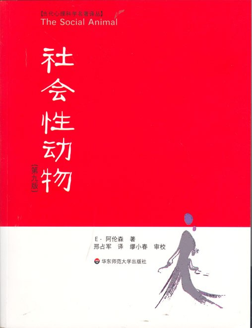

《社会性动物》

总体观点
阿伦森的《社会性动物》是社会心理学史上最经典的实证名著。其核心命题是著名的阿伦森第一定律：“做出疯狂举动的人，未必是疯子。”个体行为在极大程度上由其所处的情境、群体压力与社会关系塑造。
人类作为天生的社会性动物，对群体归属和自我形象有着本能的依赖。大脑为了节省认知资源，极易依赖启发式偏见，并在认知失调时展开极具欺骗性的自我辩护，从而引发盲从、攻击与偏见。
全书通过阿施从众实验、米尔格拉姆服从实验、拼图课堂等大量开创性研究，揭示了从众、说服、偏见与人际吸引的深层规律，并给出了通过制度合作破除群体隔阂的实证解药。
核心观点
-
1. 做出荒谬行为的人，绝大多数不是疯子，而是陷入了特定情境
“阿伦森第一定律”警示我们：不要轻易把一个人的恶行或愚蠢归咎为人格缺陷，必须首先审视他所处的群体压力。
纳粹集中营里的刽子手在家里往往是温和体贴的父亲，但在严酷的服从权威体系下，却能麻木地执行种族灭绝命令。 -
2. 群体压力能轻易让人违背眼睛看到的客观事实
从众并非源于软弱，而是源自对信息正确性的依赖与害怕被群体孤立的深层恐惧。
阿施线条实验中，面对一屋子故意选错线段长度的托儿，超过三分之一的受试者违心附和显而易见的错误答案。 -
3. 中心路径与边缘路径决定了说服的深度与持久性
理性深思依靠逻辑论据，感性冲动依靠表层线索；深思带来的态度改变远比表层刺激更稳固持久。
电视广告极少罗列复杂的技术成分，而是找当红明星在海滩阳光下微笑，利用光环效应快速诱发消费者的冲动下单。 -
4. 大脑是“认知吝啬鬼”，本能偏好走思维捷径
为了节省大脑能量，人类习惯依赖启发式判断与刻板印象，但这也成了系统性认知偏差与误判的温床。
空难发生后媒体铺天盖地报道，人们便因易得性启发而高估飞行风险，反而改乘事故率高得多的长途汽车。 -
5. 当信念与现实冲突时，人会为了捍卫自尊不惜扭曲事实
认知失调理论揭示：自我辩护往往不是欺骗他人，而是自欺欺人以维持自我良好的道德与智力形象。
邪教信徒倾家荡产等待世界末日预言落空后，不仅不醒悟，反而坚信是大家的虔诚祷告感动了上帝拯救了世界。 -
6. 宣泄暴力绝不能减少攻击，反而会强化攻击回路
所谓的“打沙袋出气”神话完全违背实证心理学，暴力表达只会进一步助长愤怒情绪与攻击习惯。
实验表明让愤怒受试者击打沙袋发泄后，他们在后续惩罚对手时给出的电击强度反而显著高于安静休息组。 -
7. 破除偏见最有效的途径是创造地位平等的相互依赖
单纯的信息普及和口头劝导无法消除歧视，唯有共同完成目标的协作机制才能熔化群体偏见。
阿伦森在得州种族学校推行“拼图课堂”，要求不同族裔学生各拿一部分知识点互相讲授，迅速化解了校园族裔仇恨。
全书思维导图 · 知识脉络树
全书结构
-
1 什么是社会心理学
定义社会心理学的科学边界，提出核心论断“做出疯狂举动的人未必是疯子”，强调外部情境与群体压力对个体行为的决定性塑造。
二战期间普通德国市民在极权狂热与邻里告密氛围下，迅速沦为纳粹种族屠杀的冷漠旁观者或帮凶。 -
2 从众
剖析个体在群体无形压力下屈从多数人意见的心理动因，区分依从、认同与内化三种由浅入深的服从层次。
阿施线条实验中，面对一屋子故意指鹿为马选错线段长度的托儿，超过三分之一的受试者违心附和错误答案。 -
3 大众传播、宣传与说服
解构大众媒体与广告塑造公众观念的机制，对比理性深思的中心路径与感性冲动的边缘路径说服策略。
汽车广告极少罗列复杂技术参数，而是拍摄靓丽模特与阳光海滩，通过边缘路径唤起消费者的欲望与身份认同。 -
4 社会认知
揭示大脑作为“认知吝啬鬼”如何通过代表性启发、易得性启发与证实偏差等捷径快速决策，从而不可避免地滋生思维偏误。
飞机失事新闻被媒体铺天盖地报道后，公众因易得性启发而对乘机极度恐慌，反而改乘事故率高得多的长途汽车。 -
5 自我辩护
阐释认知失调理论，揭示当信念与行为产生冲突时，人类极具欺骗性地通过扭曲现实和寻找借口来维持自我道德形象。
抽烟者明知吸烟有害健康却戒不掉，便自我安慰说“隔壁老王抽了一辈子烟也活到了九十岁”，以此缓解内心焦虑。 -
6 人类的攻击性
探究暴力与攻击行为的诱发根源，彻底破除“发泄情绪能减少攻击”的宣泄神话，指出挫折、痛苦与武器效应才是暴力的催化剂。
实验证明让愤怒的人去击打沙袋发泄，不仅不会让他们平静下来，反而会在后续人际互动中表现出更强的攻击倾向。 -
7 偏见
剖析刻板印象、替罪羊心理与内群体偏好，指出打破社会偏见的关键不是道德宣讲，而是建立地位平等的相互依赖合作。
阿伦森在得州种族融合学校推行“拼图课堂”，要求不同种族学生各自掌握一部分资料并互相讲授，大幅消除了族裔对立。 -
8 喜欢、爱与人际敏感性
揭秘人际吸引与亲密关系的心理规律，阐释能力卓越者的“出丑效应”、得失理论以及从激情之爱到伴侣之爱的转化机制。
完美无缺的学霸在答对全部难题后不小心把咖啡洒在身上，反而比毫无瑕疵时赢得了全场同学更多的喜爱。 -
9 作为一门科学的社会心理学
阐明社会心理学实证研究的严谨方法论，平衡实验室操纵的控制度与真实情境的生动性，并严格反思实验伦理。
米尔格拉姆服从实验虽然揭示了惊人的盲从人性的真相，但因对受试者心理造成剧烈冲击而引发了长达数十年的伦理反思与准则重塑。